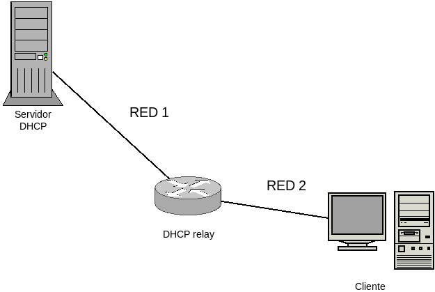

6.2.2. Servidores¶
6.2.2.1. Tipos¶
Un servidor DHCP puede trabajar de tres formas distintas:
Como servidor DHCP en sí proporcionando la información de red a los clientes que lo solicitan y que es la función a la que dedicamos el tema.
Como DHCP relay, en que el servidor se limita a retransmitir los paquetes enviados por el servidor DHCP real. Se usa para resolver el caso en que el servidor DHCP no comparte red con los cientes:
En este caso, el router, además de comunicar ambas redes, retransmite hacia el servidor las peticiones de los clientes y retransmite a los clientes las respuestas del servidor.
Como proxy DHCP, que se limita a complementar la información del servidor DHCP real, comunicando a los clientes que se dispone de información para arranque por red. Trataremos este tipo de servidor al tratar el servicio PXE.
6.2.2.2. Implementaciones¶
Las implementaciones libres de servidores DHCP más usadas son las siguientes:
- udhcpd
- Es el microservidor del proyecto busybox y suele encontrarse en los linux empotrados en algunos dispositivos.
- dnsmasq
- Es un servidor ligero que incorpora, además, un DNS y un TFTP. Es más que competente para la resolución de la mayor parte de las situaciones con que nos encontramos en pequeñas redes locales.
- ISC DHP Server
- Es el servidor tradicional del ISC (que también patrocina el servidor DNS bind). Es bastante más pesado que el anterior, pero permite un mayor control sobre la configuración.
- ISC KEA
- Es el nuevo servidor del ISC, que previsiblemente sustituirá al anterior en el futuro.